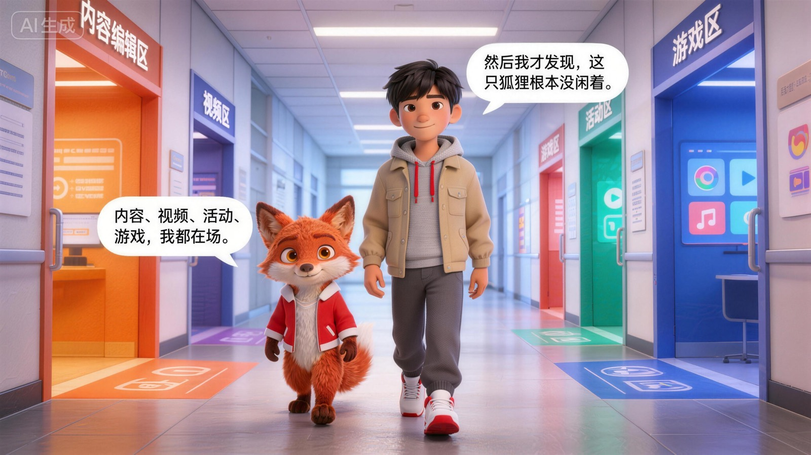

起点
搜狐进入中文互联网早期视野，成为很多用户接触网络资讯与门户体验的重要入口。
中文互联网
门户入口
Chapter 02
如果要把搜狐讲清楚，先要把它放回中国互联网的时间线里。 它不是某一个单点产品，而是一个经历过门户、内容、视频和多元业务扩展的长期样本。
如果把搜狐放回中国互联网的发展里看，它最特别的地方，不只是出现得早，而是一直没有停在原地。 它从最初的入口形态出发，在不同阶段不断调整自己的位置，也因此走到了今天。

这更像搜狐一路走来的结构隐喻，而不是单一时刻的定格。
搜狐的发展里，真正值得被注意的，不只是几个年份本身， 而是它怎样在不同阶段不断改变自己的形态，又始终留在中文互联网里。
搜狐进入中文互联网早期视野，成为很多用户接触网络资讯与门户体验的重要入口。
搜狐逐渐形成广泛的品牌认知，不只是一个网址，而是很多人认识互联网的一张名片。
新闻、体育、娱乐、财经等频道逐渐完整，搜狐开始从“入口”进化为“内容阵地”。
视频、社交、游戏等方向继续展开，搜狐不再只是一家门户网站，而是一组更复杂的产品和内容组合。
在平台更替非常快的环境里，搜狐依然保留着内容表达能力和品牌辨识度，这本身就值得被讲。
接下来不只看它的历史，而是看它今天仍然是什么。